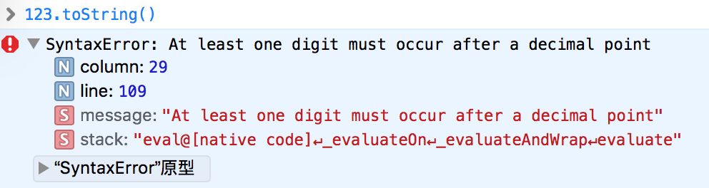
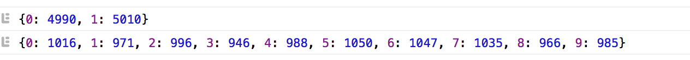

本文总结 JavaScript 语言中和数字相关的语言特性、缺陷与陷阱及使用技巧。相关基础内容请参考语言规范，本文只涉及较容易被疏忽的方面。首先分享一个经验：我在使用 JavaScript 做大数计算或高精度计算时有个原则：不要使用 JavaScript 做这件事情！ 如果某个运算过程你可以选择在 Java 中或 JavaScript 中完成，尽可能不要使用 JavaScript 做数学运算！
本文所有示例内容在如下环境测试：
$ node -vv4.0.0$ node -p process.versions.v84.5.103.30
或
Safari 版本 9.0 (11601.1.56)
1. 数字字面值也是对象
在 JavaScript 中，数字的字面值也是对象。可以使用它直接调用方法：
$ 3.1415926.toFixed(4)'3.1416'
然而使用整数直接调用方法会抛出 SyntaxError ，这是因为解释器不能正确解析，它试图将点操作符解释成浮点数的一部分：

克服这种情况非常简单，有下面三种方法：
123..toString();123 .toString();(123).toString();
2. 两个特殊数值：NaN 和 Infinity
2.1. NaN
NaN 代表“不是一个数字”，而它的类型却是 number 。实际使用中，它通常产生自——从表单取数据并转换成数字类型：
var age = document.getElementById('age').value;Number(age); // 用户输入 'abc' 时此处则为 `NaN`
识别 NaN 不能依赖等同判断( === )，甚至普通的相等判断( == )也不行：
$ Number('1.2x') === NaNfalse$ Number('abc') == NaNfalse
需要使用 isNaN 方法：
$ isNaN(NaN)true
然而此方法会尝试将其参数动态转换成 number 类型再判断，因此对于 string 或 object 等类型的检测，它通常会返回 true :
isNaN('xyz'); // trueisNaN(['abc']); // trueisNaN({}); // trueisNaN([123]); // false
为了正确的检测出 NaN 可以使用一个小技巧，它基于这样一个事实：目前只有 NaN 是不等于自身的对象：
function isRealNaN (x) {return x !== x;}console.log(isRealNaN(NaN)); // trueconsole.log(isRealNaN({})); // falseconsole.log(isRealNaN('foo')); // false
更为正统的方式是这样的：
function isRealNaN (x) {return typeof x === 'number' && isNaN(x);}
当然，在实现了 ECMAScript 6 的解释器环境中，也可以使用 Number.isNaN() 方法。
2.2. Infinity
Infinity 实际开发中出现的频率似乎并不高。它代表无穷大，对应的还有 -Infinity 代表无穷小。看几个例子即可：
123 / 0 // InfinityInfinity + 1 // InfinityInfinity + Infinity // InfinityInfinity - Infinity // NaN
3. 数字的显示方式
- 整数位数超过 21 位时显示成科学计数法：
$ 12345678901234567890121.2345678901234568e+21$ 123456789012345678901123456789012345680000
- 以
0.开头，后面跟着超过 5 个零时，显示成科学计数法：
$ 0.00000011e-7$ 0.0000010.000001
- 其它情况下正常显示。
4. 总是不准的数学运算
如果你有一定的 JavaScript 开发经验，一定遇到过浮点数算不准确的问题：
$ 0.1 + 0.2 === 0.3false$ 0.2 * 0.2 === 0.04false
然而事情似乎并不只是发生在浮点数身上：
$ 9007199254740992 + 19007199254740992$ 9007199254740992 + 29007199254740994
这是因为事实上 JavaScript 中的一切数字实际存储的均为 64 bit 浮点数，采用 IEEE 754 规范。
5. 不尽如人意的四舍五入
toFixed() 方法可把 Number 四舍五入为指定小数位数的数字。
以上是 w3school 对 toFixed() 方法的解释，然而此方法并不尽如人意。
当数字大于 21 位时，toFixed() 方法只是调用 toString() 返回科学计数法：
$ (1234567890123456789012).toFixed(2)'1.2345678901234568e+21'
由于浮点数精度问题，toFixed() 方法实际上只能正确做到“四舍六入”，对于“五”，它的处理看上去并不那么精确：
$ 1.105.toFixed(2)'1.10'
关于此方法还有“四舍六入五成双”的解释：
- 被修约的数字小于5时，该数字舍去；
- 被修约的数字大于5时，则进位；
- 被修约的数字等于5时，要看5前面的数字，若是奇数则进位，若是偶数则将5舍掉，即修约后末尾数字都成为偶数；若5的后面还有不为“0”的任何数，则此时无论5的前面是奇数还是偶数，均应进位。
然而这也并不准确，可以参考下面的结果：
1.105 '1.10'
1.115 '1.11'
1.125 '1.13'
1.135 '1.14'
1.145 '1.15'
1.155 '1.16'
1.165 '1.17'
1.175 '1.18'
1.185 '1.19'
1.195 '1.20'
有种比较流行的修正方法：
function myToFixed(value, precision) {precision = precision || 0;var pow = Math.pow(10, precision);return (Math.round(value * pow) / pow).toFixed(precision);}
它的计算结果看上去准确多了：
1.105 '1.11'
1.115 '1.12'
1.125 '1.13'
1.135 '1.14'
1.145 '1.15'
1.155 '1.16'
1.165 '1.17'
1.175 '1.18'
1.185 '1.19'
1.195 '1.20'
然而这个世界对程序员并没有那么善意：
console.log(myToFixed(2.135, 2));// 输出 2.13
最后，我就不告诉你IE7的结果不尽相同了。而其它浏览器的计算结果是否和我的环境相同，我也不敢告诉你答案，因为我不确定。至于如何完全正确地四舍五入，我并没有答案，也有人采用转成字符串进而进行正则匹配的方法，这在特定的场合下也许可行，但很难写出通用的方法。
6. 取随机整数
JavaScript 中缺少产生随机整数的方法，但是可以用 Math.random() 自行实现。参考代码如下：
function nextInt(n) {var ret = parseInt(Math.random() * n);if (ret > n || ret < 0 ) {ret = n;}return ret;}
产生的随机数分布的还算均匀。使用如下代码测试：
function test(x) {var foo = {};for (var i = 10000 - 1; i >= 0; i--) {var s = nextInt(x);if (foo[s]) {foo[s] = foo[s] + 1;} else {foo[s] = 1;}}console.log(foo);}test(2);test(10);
输出：

参考资料：
@ssbunny 2015-11-03